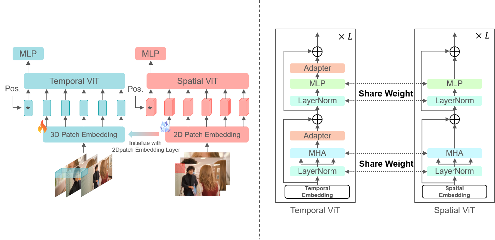

<!DOCTYPE html>
<html lang="en">
<head>
    <meta charset="UTF-8">
    <meta name="description"
        content="Deformable Neural Radiance Fields creates free-viewpoint portraits (nerfies) from casually captured videos.">
    <meta name="viewport" content="width=device-width, initial-scale=1.0">
    <title>Dynamic Network Graph with YouTube Video</title>
   <link rel="stylesheet" href="./static/css/bulma.min.css">
   <link rel="stylesheet" href="./static/css/bulma-carousel.min.css">
   <link rel="stylesheet" href="./static/css/bulma-slider.min.css">
   <link rel="stylesheet" href="./static/css/fontawesome.all.min.css">
   <link rel="stylesheet"
        href="https://cdn.jsdelivr.net/gh/jpswalsh/academicons@1/css/academicons.min.css">
   <link rel="stylesheet" href="./static/css/index.css">
   <link rel="icon" href="./static/images/logo.jpg">
    <script src="https://cdnjs.cloudflare.com/ajax/libs/cytoscape/3.20.0/cytoscape.min.js"></script>
    <script src="https://ajax.googleapis.com/ajax/libs/jquery/3.5.1/jquery.min.js"></script>
    <script defer src="./static/js/fontawesome.all.min.js"></script>
    <script src="./static/js/bulma-carousel.min.js"></script>
    <script src="./static/js/bulma-slider.min.js"></script>
    <script src="./static/js/index.js"></script>
    <style>
        #cy {
            width: 100%;
            height: 600px;
            border: 1px solid #ccc;
        }
        #videoContainer {
            display: none;
            margin-top: 20px;
        }
        iframe {
            width: 640px;
            height: 360px;
        }
    </style>
</head>

<body>
    <section class="hero">
  <div class="hero-body">
    <div class="container is-max-desktop">
      <div class="columns is-centered">
        <div class="column has-text-centered">
          <h1 class="title is-1 publication-title">Self-Supervised Learning Based on Text and Audiovisual Latent Space for Movie Understanding</h1>
          <div class="is-size-5 publication-authors">
            <span class="author-block">
              <a href="https://sites.google.com/view/ntust-miislab">Wei-Lun Huang</a><sup>1</sup>,</span>
            <span class="author-block">
              <a href="https://sites.google.com/view/ntust-miislab">Tse-Yu Pan</a><sup>1</sup>,</span>

          <div class="is-size-5 publication-authors">
            <span class="author-block"><sup>1</sup>National Taiwan University of Science and Technology MiiSLab</span>
          </div>

          <div class="column has-text-centered">
            <div class="publication-links">
              <!-- PDF Link. -->
              <span class="link-block">
                <a href="https://arxiv.org/pdf/2011.12948"
                   class="external-link button is-normal is-rounded is-dark">
                  <span class="icon">
                      <i class="fas fa-file-pdf"></i>
                  </span>
                  <span>Paper</span>
                </a>
              </span>
              <span class="link-block">
                <a href="https://arxiv.org/abs/2011.12948"
                   class="external-link button is-normal is-rounded is-dark">
                  <span class="icon">
                      <i class="ai ai-arxiv"></i>
                  </span>
                  <span>arXiv</span>
                </a>
              </span>
              <!-- Video Link. -->
              <span class="link-block">
                <a href="https://www.youtube.com/watch?v=MrKrnHhk8IA"
                   class="external-link button is-normal is-rounded is-dark">
                  <span class="icon">
                      <i class="fab fa-youtube"></i>
                  </span>
                  <span>Video</span>
                </a>
              </span>
              <!-- Code Link. -->
              <span class="link-block">
                <a href="https://github.com/google/nerfies"
                   class="external-link button is-normal is-rounded is-dark">
                  <span class="icon">
                      <i class="fab fa-github"></i>
                  </span>
                  <span>Code</span>
                  </a>
              </span>
              <!-- Dataset Link. -->
              <span class="link-block">
                <a href="https://github.com/google/nerfies/releases/tag/0.1"
                   class="external-link button is-normal is-rounded is-dark">
                  <span class="icon">
                      <i class="far fa-images"></i>
                  </span>
                  <span>Data</span>
                  </a>
            </div>

          </div>
        </div>
      </div>
    </div>
  </div>
</section>

    <section class="section">
  <div class="columns is-centered has-text-centered">
      <div class="column is-four-fifths">
          <h2 class="title is-3">Our Two-stream Visual Encoder</h2>
        <div class="publication-video">
          
        </div>
      </div>
  </div>
</section>

    <section class="section">
  <div class="container is-max-desktop">
    <!-- Abstract. -->
    <div class="columns is-centered has-text-centered">
      <div class="column is-four-fifths">
        <h2 class="title is-3">Abstract</h2>
        <div class="content has-text-justified">
          <p>
            Computer vision models excel in applications like image classification and object detection but still face challenges in understanding movie content. These challenges include
the complexity of scenes and actions in movies, diverse content, difficulties in integrating
multi-modal information, and the difficulty of data annotation. This study aims to develop
a general multi-modal movie encoder to address various downstream tasks such as predicting the director, movie release year, and genre, thereby enhancing the efficiency of
movie analysis.
We extend the CLIP model and propose the TA-CLIP method. The design highlights
are as follows:
  <p>            
1. Retain the pre-trained parameters of the CLIP model and add trainable modules to
its visual encoder to enhance the extraction of temporal information.
      </p>
    <p>          
2. Incorporate audio features and design a Visual Feature Enhancement Module
(VFEM) and an Auditory Feature Enhancement Module (AFEM) to achieve finegrained fusion of multi-modal information.
        </p>
    <p>          
3. Employ a two-stage training strategy. The first stage utilizes movie trailers and
their metadata for self-supervised contrastive learning, while the second stage uses
a small amount of data to train a multi-layer perceptron to adapt to multiple movie
content understanding tasks.
    </p>
Our method demonstrates competitiveness in nine downstream tasks on the LVU
dataset, showing advantages in movie content understanding.
          </p>
          
        </div>
      </div>
    </div>
    <!--/ Abstract. -->
    
    
  </div>
</section>

    <section class="section">
  <!-- Paper video. -->
    <div class="columns is-centered has-text-centered">
      <div class="column is-four-fifths">
        <h2 class="title is-3">Our Two-stream Visual Encoder</h2>
        <div class="publication-video">
          
        </div>
      </div>
    </div>
    <!--/ Paper video. -->
</section>
    
    
    <section class="section">
        <div class="container is-max-desktop">
            <div class="columns is-centered has-text-centered">
            <div class="column is-four-fifths">
            <h2 class="title is-3">Movie Retrieval Demo</h2>
            <form id="promptForm">
              <div class="field">
                <label class="label" for="prompt">Enter your text prompt:</label>
                <div class="control">    
                    <input type="text" id="inputText" placeholder="Enter text">
                    </div>
          </div>
          <div class="control">
            <button onclick="generateNetwork()">Search</button>
        </div>
            <div id="cy"></div>
            <div id="videoContainer">
                <iframe id="videoPlayer" src="" frameborder="0" allowfullscreen></iframe>
            </div>
                </div>
            </div>
        </div>
    </section>

    <footer class="footer">
  <div class="container">
    <div class="content has-text-centered">
      <a class="icon-link"
         href="./static/videos/nerfies_paper.pdf">
        <i class="fas fa-file-pdf"></i>
      </a>
      <a class="icon-link" href="https://github.com/keunhong" class="external-link" disabled>
        <i class="fab fa-github"></i>
      </a>
    </div>
    <div class="columns is-centered">
      <div class="column is-8">
        <div class="content">
          <p>
            This website is licensed under a <a rel="license"
                                                href="http://creativecommons.org/licenses/by-sa/4.0/">Creative
            Commons Attribution-ShareAlike 4.0 International License</a>.
          </p>
          <p>
            This means you are free to borrow the <a
              href="https://github.com/nerfies/nerfies.github.io">source code</a> of this website,
            we just ask that you link back to this page in the footer.
            Please remember to remove the analytics code included in the header of the website which
            you do not want on your website.
          </p>
        </div>
      </div>
    </div>
  </div>
</footer>
    
    <script>
        async function generateNetwork() {
            const inputText = document.getElementById('inputText').value;

            // 向后端发送请求获取相似度计算结果
            const response = await fetch('http://localhost:5001/api/generate-graph', {
                method: 'POST',
                headers: {
                    'Content-Type': 'application/json'
                },
                body: JSON.stringify({ text: inputText })
            });
            const data = await response.json();
            createCytoscapeNetwork(data);
        }

        function createCytoscapeNetwork(data) {
            const cy = cytoscape({
                container: document.getElementById('cy'),
                elements: [
                    ...data.nodes.map(node => ({
                        data: {
                            id: node.id,
                            label: node.label,
                            videoUrl: node.video,
                            similarity: node.similarity,
                            width: 10 + node.similarity * 40, // 动态调整大小
                            height: 10 + node.similarity * 40, // 动态调整大小
                            backgroundColor: getColorFromSimilarity(node.similarity) // 动态调整颜色
                        }
                    })),
                    ...data.links.map(link => ({
                        data: {
                            source: link.source,
                            target: link.target
                        }
                    }))
                ],
                style: [
                    {
                        selector: 'node',
                        style: {
                            'label': 'data(label)',
                            'text-valign': 'center',
                            'text-halign': 'center',
                            'background-color': 'data(backgroundColor)',
                            'width': 'data(width)',
                            'height': 'data(height)',
                            'color': '#fff',
                            'font-size': '12px',
                            'border-width': '2px',
                            'border-color': '#333',
                            'text-outline-color': '#333',
                            'text-outline-width': '1px'
                        }
                    },
                    {
                        selector: 'edge',
                        style: {
                            'width': 3,
                            'line-color': '#ccc'
                        }
                    }
                ],
                layout: {
                    name: 'cose'
                }
            });

            cy.on('tap', 'node', function(evt){
                const node = evt.target;
                const videoUrl = node.data('videoUrl');
                if (videoUrl) {
                    document.getElementById('videoPlayer').src = videoUrl.replace("watch?v=", "embed/");
                    document.getElementById('videoContainer').style.display = 'block';
                }
            });
        }

        function getColorFromSimilarity(similarity) {
            let red, green, blue;
            if (similarity >= 0.5) {
                // 从白色到红色的梯度
                red = 255;
                green = Math.floor((1 - similarity) * 2 * 255);
                blue = Math.floor((1 - similarity) * 2 * 255);
            } else {
                // 从蓝色到白色的梯度
                red = Math.floor(similarity * 2 * 255);
                green = Math.floor(similarity * 2 * 255);
                blue = 255;
            }
            // 返回 RGB 颜色字符串
            return `rgb(${red}, ${green}, ${blue})`;
        }
    </script>
</body>
</html>
